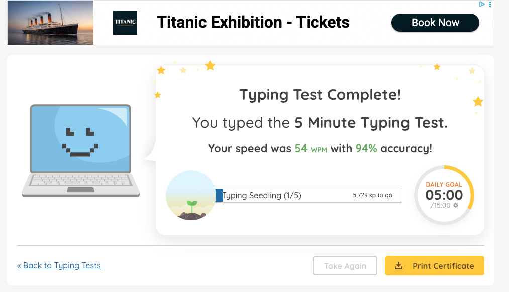
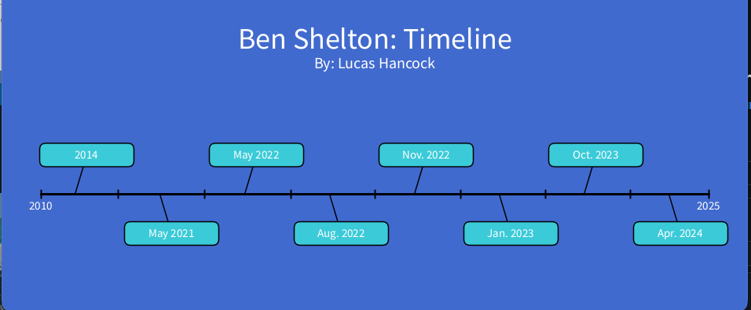
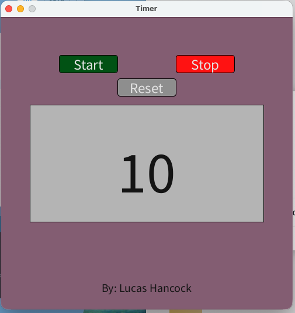
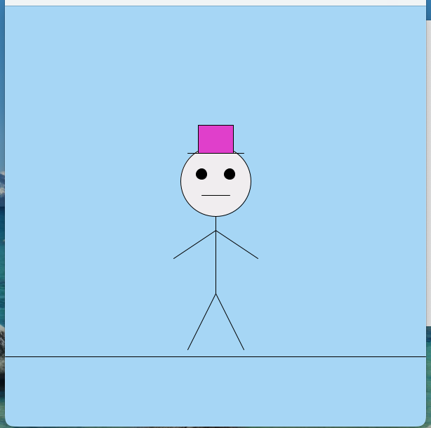
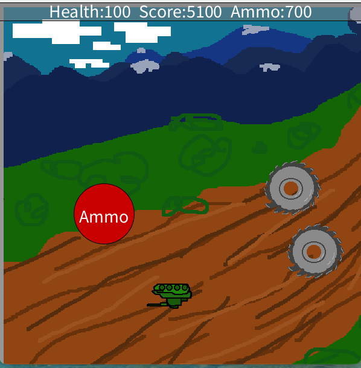
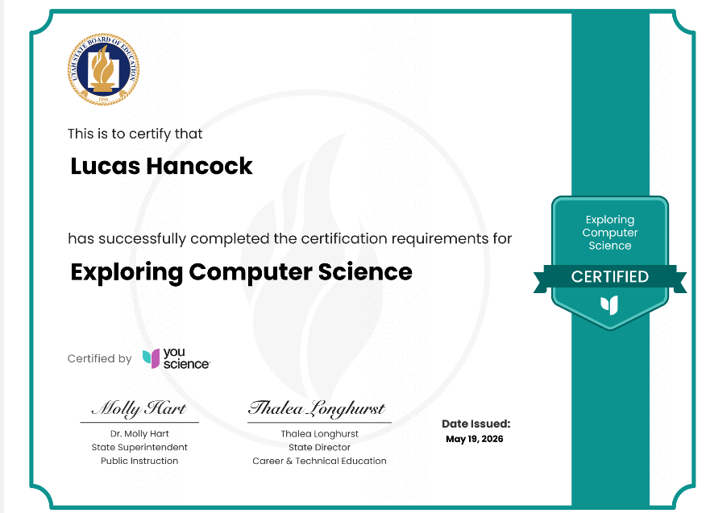

Typing Results:
I am typing currently at around 60 words per minute with 96% accuracy.
Download here
Timeline

This is my timeline project on the best tennis player of all time, Ben Shelton. This consists of major important events in the tennis career of Ben Shelton such as when he won a great world cup, when he started to become prevelant, and who his coach was and when he started training him. This was a decently easy overall and gave me good skills to go on.
Download hereTimer

This is my timer game and in this coding project, it consists of a timer counting down from 10 seconds, an ararm/ringing sound when the timer is over, and even a nice colorful visual as the background. I made this earlier in the year with only a little help from Mr. Kaptie and I designed it solely myself. This is one of my favorite projects and it demonstrates my skills thouroughly.
Download hereCreature

This is my creature who is basically a human and he has a little pink hat. I made this very early in the year when I was a little bit less advanced and didn't have the skills I have now but overall, this was a great first project and I really enjoyed doing it.
Download hereTank Game

This is my Tank Game, which is by far the hardest project of all time I have done in this class, of course. This has demonstarted lots of determination in completing it and it is very hard.
Download here
This is my state "Exploring Computer Science" certificate that I earned by getting an 80.23% on the test, which I am very proud of. This demonstrates that I have a wide variety of knowledge towards computer science and can potentially earn a job or internship to persue a career in this subject.
Download here